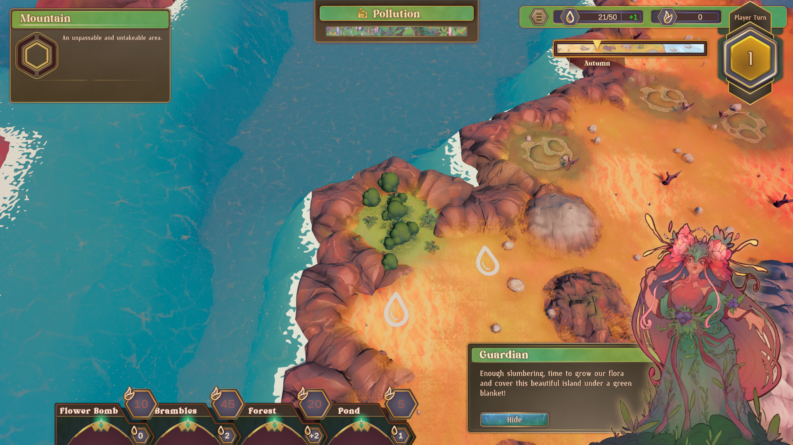

Description:
Flora Domina is a 4X-lite turn-based strategy game where you play as the nature guardian of a small island.
When humans settle on the island you discover that they have no intention of preserving nature and you'll have to take action.
In this Unity group project I was the sole programmer. I was mainly responsible for implementing the turn based logic, player actions and AI behavior.
I worked closely together with the Technical artist in creating the procedural island generation and set up functionality for the Sound Designer & HUD/UI artist.
Features:
-Turn-Based Logic:
The turn system of Flora Domina has been implemented as a state pattern with each state representing a possible phase of the turn (e.g. upkeep of resources, a phase for the player input, ...)
-Procedural Island Generation:
A generation algorithm creates the island as a hexagonal grid in a dynamic & random shape.
Then, another algorithm is run to assign each hexcell a type (dirt tile, mountain tile, geyser tile, ...) and Playerfactions are spawned at opposite sides of the island.
Lastly, the edge of the island gets calculated for a shader to be applied, creating a cliff.
-Seasons:
Every x turns, the game goes into the next season. This resulted in lots of additional functionality needed for both visual changes as well as gameplay elements behaving differently.
-Player Input & Player Actions:
A Command Pattern is implemented in the player pawn. Input gets translated in commands which get added to a command queue, ready to be executed.
-AI Decision algorithms:
The AI uses the same commands as the player, with the only difference that it generates them using an algorithm instead of taking them from user input.
